Read an array of aero_dists with associated times and rates from the given file.
Parameters
[in,out]
file
Spec file to read data from.
[in,out]
aero_data
Aero data.
[in]
read_aero_weight_classes
Whether the weight classes for each source are specified in inputs.
times
Times (s).
rates
Rates (s^{-1}).
aero_dists
Aero dists.
An aerosol distribution profile input file must consist of three lines:
the first line must begin with time and should be followed by space-separated real scalars, giving the times (in s after the start of the simulation) of the aerosol distrbution set points — the times must be in increasing order
the second line must begin with rate and should be followed by space-separated real scalars, giving the values at the corresponding times
the third line must begin with dist and should be followed by space-separated filenames, each specifying an aerosol distribution in the format Input File Format: Aerosol Distribution at the corresponding time
The units of the rate line depend on the type of aerosol distribution profile:
Emissions aerosol profiles have rates with units m/s — the aerosol distribution number concentrations are multiplied by the rate to give an emission rate with unit #/(m^2 s) which is then divided by the current mixing layer height to give a per-volume emission rate.
Background aerosol profiles have rates with units 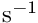, which is the dilution rate between the background and the simulated air parcel. That is, if the simulated number concentration is and the background number concentration is 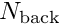, then dilution is modeled as 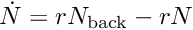, where is the rate.
Between the specified times the aerosol profile is interpolated step-wise and kept constant at its last value. That is, if the times are , the rates are 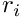, and the aerosol distributions are 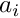 (all with 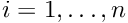), then between times and 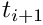 the aerosol state is constant at 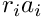. Before time 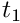 the aerosol state is 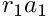, while after time 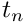 it is 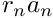.
Example: an emissions aerosol profile could be:
time 0 600 1800 # time (in s) after sim start
rate 1 0.5 1 # scaling factor in m/s
dist dist1.dat dist2.dat dist3.dat # aerosol distribution files
Here the emissions between 0 min and 10 min are given by dist1.dat (with the number concentration interpreted as having units 1/(m^2 s)), the emissions between 10 min and 30 min are given by dist2.dat (scaled by 0.5), while the emissions after 30 min are given by dist3.dat.